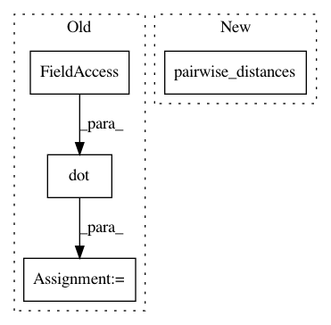

e52e9c8d7536b6315da655164951060642a52707,sklearn/manifold/tests/test_t_sne.py,,test_barnes_hut_angle,#,609
Before Change
random_state = check_random_state(0)
distances = random_state.randn(n_samples, n_features)
distances = distances.astype(np.float32)
distances = abs(distances.dot(distances.T))
np.fill_diagonal(distances, 0.0)
params = random_state.randn(n_samples, n_components)
P = _joint_probabilities(distances, perplexity, verbose=0)
kl_exact, grad_exact = _kl_divergence(params, P, degrees_of_freedom,
n_samples, n_components)
k = n_samples - 1
bt = BallTree(distances)
distances_nn, neighbors_nn = bt.query(distances, k=k + 1)
neighbors_nn = neighbors_nn[:, 1:]
distances_nn = np.array([distances[i, neighbors_nn[i]]
for i in range(n_samples)])
assert np.all(distances[0, neighbors_nn[0]] == distances_nn[0]),\
abs(distances[0, neighbors_nn[0]] - distances_nn[0])
P_bh = _joint_probabilities_nn(distances_nn, neighbors_nn,
perplexity, verbose=0)
After Change
random_state = check_random_state(0)
data = random_state.randn(n_samples, n_features)
distances = pairwise_distances(data)
params = random_state.randn(n_samples, n_components)
P = _joint_probabilities(distances, perplexity, verbose=0)
kl_exact, grad_exact = _kl_divergence(params, P, degrees_of_freedom,
n_samples, n_components)
In pattern: SUPERPATTERN
Frequency: 3
Non-data size: 4
Instances
Project Name: scikit-learn/scikit-learn
Commit Name: e52e9c8d7536b6315da655164951060642a52707
Time: 2019-09-18
Author: tom.dupre-la-tour@m4x.org
File Name: sklearn/manifold/tests/test_t_sne.py
Class Name:
Method Name: test_barnes_hut_angle
Project Name: metric-learn/metric-learn
Commit Name: acca56781a462fea67a908ffda96d26dafd7ef52
Time: 2018-08-17
Author: 31916524+wdevazelhes@users.noreply.github.com
File Name: metric_learn/mlkr.py
Class Name:
Method Name: _loss
Project Name: scikit-learn/scikit-learn
Commit Name: e52e9c8d7536b6315da655164951060642a52707
Time: 2019-09-18
Author: tom.dupre-la-tour@m4x.org
File Name: sklearn/manifold/tests/test_t_sne.py
Class Name:
Method Name: test_binary_search